Префектура Киото · Тоганоо · храм
Храм Кодзан-дзи: зайцы и лягушки «Тёдзю-гига», первый чай Японии и сад во мху
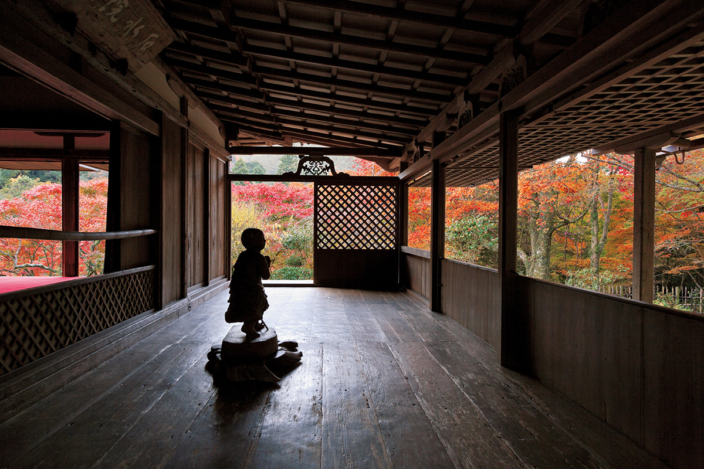
В горах Тоганоо, на северо-западной окраине Киото, стоит храм Кодзан-дзи. Здесь хранят «Тёдзю-гига», свитки с зайцами и лягушками, которые называют первой японской мангой, а ещё здесь, по преданию, вырос первый японский чай.
Храм
Обитель в горах Тоганоо
Кодзан-дзи стоит на склоне горы в Тоганоо, живописной местности на северо-западе Киото. Храм основали в 774 году по желанию императора Конина, тогда он назывался Дзинган-дзи Тоганообо. В 814 году его переименовали в Тоганоо Дзюмудзин-ин, позже он стал филиалом соседнего храма Дзинго-дзи. Нынешнее имя появилось в 1206 году, в начале эпохи Камакура: бывший император Го-Тоба своим указом отдал эти земли монаху Мёэ, и тот назвал обитель Кодзан-дзи.
Говорят, в те годы храм был почти заброшен. Уважаемым центром учёности его сделал Мёэ, человек очень широких религиозных взглядов. Потом Кодзан-дзи не раз оказывался на грани гибели от наводнений и войн, и то, что храм и его сокровища дожили до наших дней, заслуга монахов, продолживших дело Мёэ. Сегодня Кодзан-дзи входит в список Всемирного наследия ЮНЕСКО.
Мастер икэбаны Сэнсо Икэнобо приезжает сюда снова и снова. Он родился в 1992 году в Киото, в семье школы Икэнобо, которая ведёт историю с эпохи Муромати: его дед возглавляет школу, мать станет её следующей главой. Сам он рассказывает об икэбане на лекциях и показах, а ещё в фотографиях и текстах.
«Постройки здесь простые и строгие, они растворяются в окружающей природе. Кажется, будто тебя обнимают горы, и на душе становится очень спокойно»
Сэнсо Икэнобо
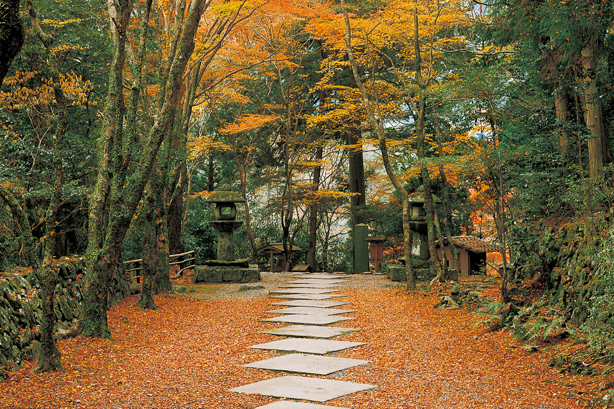
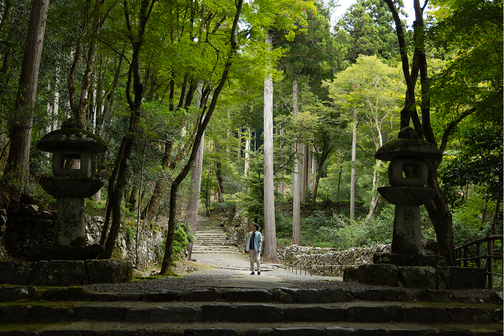
Слева от каменной лестницы стоит стела с названием храма, надпись на ней сделал художник Тэссай Томиока (1837–1924), один из последних мастеров живописи литераторов. Там, где когда-то были большие ворота, теперь стоит каменный фонарь. Есть и вторая, задняя дорога: она идёт вдоль каменной кладки с низкой белой стеной поверху и выводит к воротам Саммон, а через них к Сэкисуй-ин.
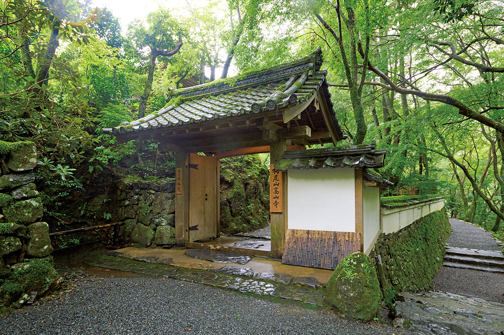
Сэкисуй-ин
Галерея, куда приходил Кавабата
Главное, что стоит увидеть в Кодзан-дзи, это Сэкисуй-ин, национальное сокровище Японии. Единственная постройка, сохранившаяся со времён Мёэ, она показывает, как выглядели здания в стиле синдэн-дзукури эпохи Камакура. Когда-то это было восточное хранилище сутр. После того как прежний Сэкисуй-ин смыло наводнением, хранилище перенесли на его место, и оно унаследовало имя.
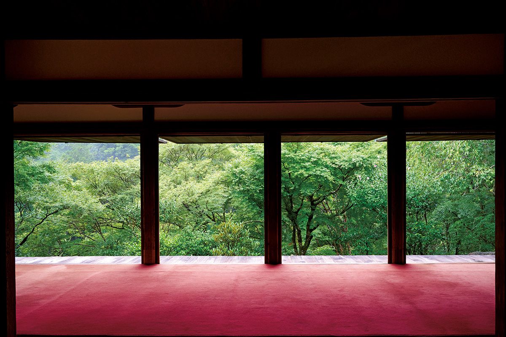
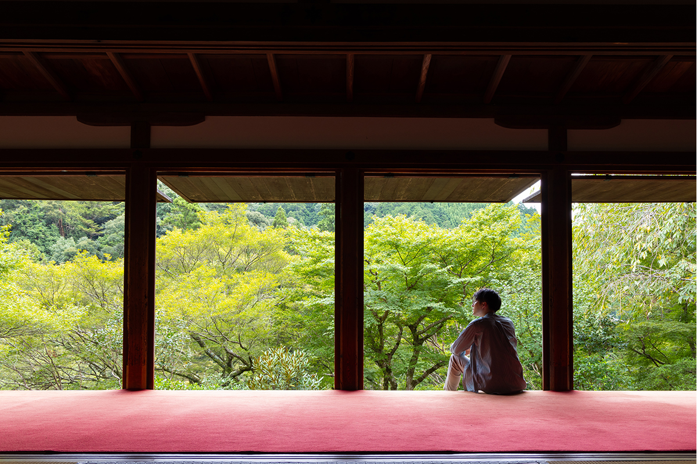
На южной стороне висит табличка с надписью, которую Го-Тоба своей рукой написал для храма: «Высокая гора, которую первой озаряет восходящее солнце». От этих слов и пошло название Кодзан-дзи, «храм на высокой горе». Здесь же можно увидеть копию образа Буцугэн Буцумо. С ним связана известная история: перед этим образом Мёэ, чтобы доказать твёрдость своего решения посвятить жизнь пути Будды, отрезал себе правое ухо. Поэтому у его статуи в зале Кайсандо нет правого уха.
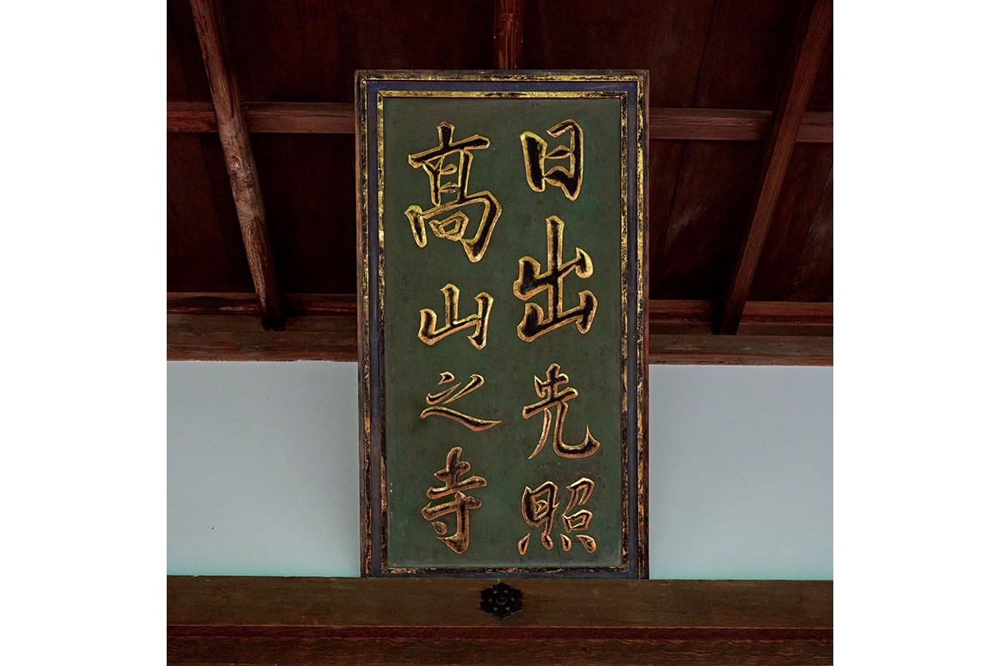
Сэнсо Икэнобо садится на край открытой южной галереи и смотрит на молодые клёны, пьерис и другие деревья.
«Управляющий храма рассказывал, что всё это растёт само, никто ничего не сажал. Мёэ никогда не любил выделяться, и стихи у него безо всякой натуги. Он писал о луне, которую очень любил: „Ах, светло! Как светло, светло! Ах, светло! Как светло, светло! Ах, светло, луна!“ Так просто сказать о самом любимом, по-моему, чудесно. Его естественность и сегодня живёт в этом саду»
Сэнсо Икэнобо
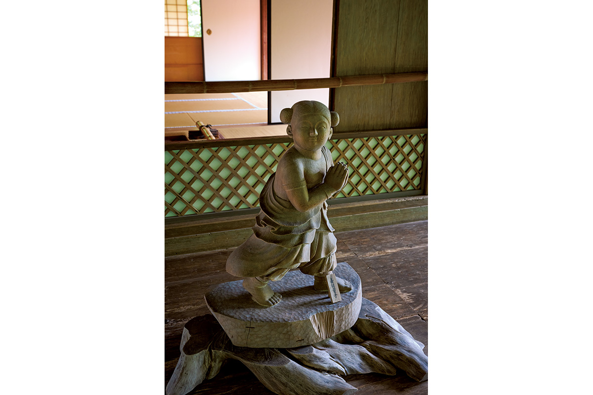
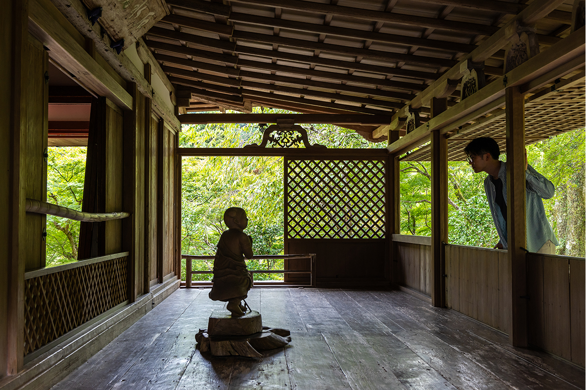
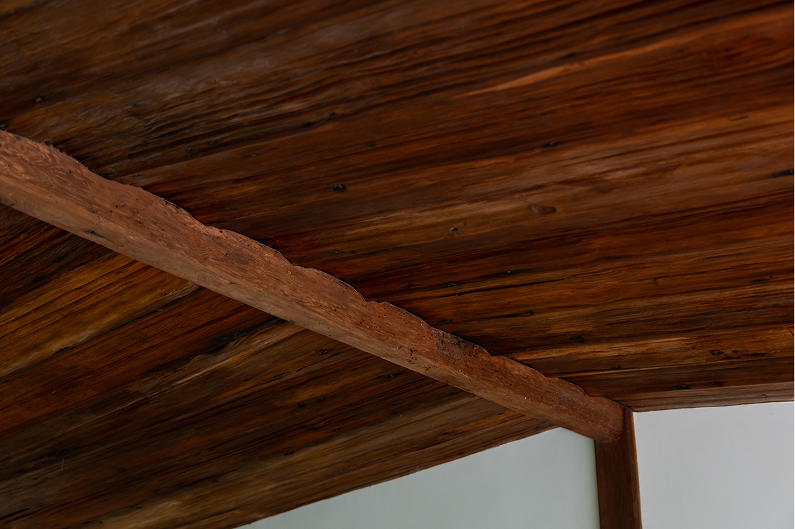
Мастер икэбаны говорит, что в эпоху, когда от создателя всё время ждут нового и сделанного, он особенно ценит красоту недеяния. Учитель в икэбане это природа, её формы и жизнь, которые выше человеческого разумения. Природа прекрасна сама, и человеку лучше лишь чуть-чуть помочь ей. Тогда и тот, кто ставит букет, освобождается от напряжения и желания «самовыразиться». Цветы ведь ставят не для того, чтобы показать людям, и сами цветы цветут не для того, чтобы на них смотрели.
Залы
Кайсандо и Кондо
Мёэ провёл последние годы и умер в зале Дзэндо-ин. В эпоху Муромати он сгорел, а в эпоху Эдо на его месте построили Кайсандо, зал основателя. Каждый год 8 ноября здесь проходит служба с подношением чая.
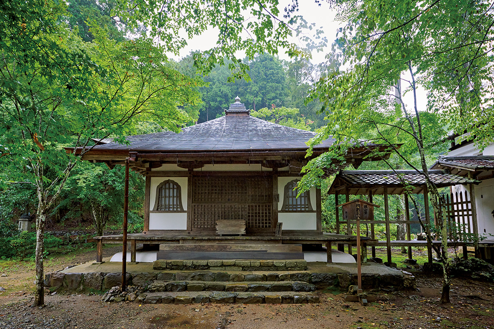
Главный зал храма тоже сгорел в эпоху Муромати, во время войны. В 1634 году на его место перенесли старый зал из храма Нинна-дзи, и он стал залом Кондо. Главный образ здесь Будда Шакьямуни.
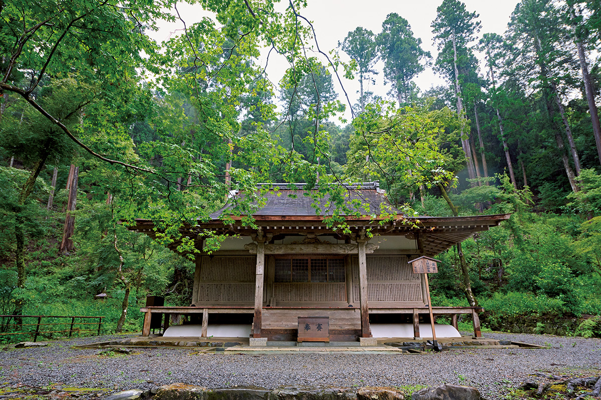
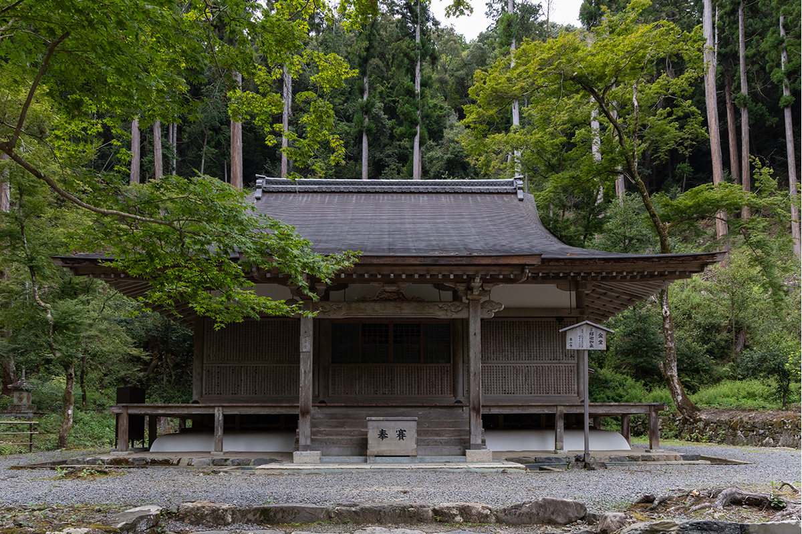
Деревья и травы на территории почти не трогают, и растут они в полную силу, как им вздумается. Осенью сюда едут за красными листьями, но характер Мёэ лучше всего чувствуется в чистой и скромной простоте Кодзан-дзи.
Мёэ
Монах на сосне
Мёэ не замыкался в одной школе и одном учении, не любил прикрываться авторитетом и всю жизнь шёл к Будде своим путём. Гору за храмом он назвал Рёгасэн и медитировал в её лесах днём и ночью. Он так тосковал по Будде, что дважды собирался в Индию, но оба раза отказался от поездки, получив откровение от божества Касуга. Видимо, он старался приблизиться к Будде силой воображения и суровой практикой, не покидая Японии. В горах до сих пор остались места его хижин и памятные камни там, где он медитировал.
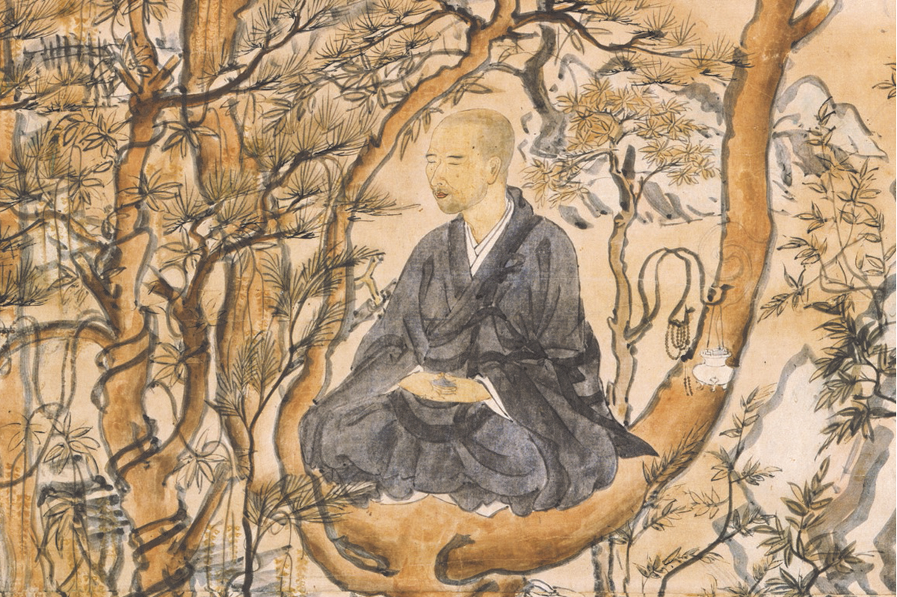
Самый известный портрет Мёэ изображает его в медитации на ветвях красной сосны, которую он назвал Дзёсёдзю. По преданию, портрет написал его ученик. Вокруг монаха деревья, птицы и мелкие звери: так художник передал мягкий нрав человека, любившего природу и всё живое.
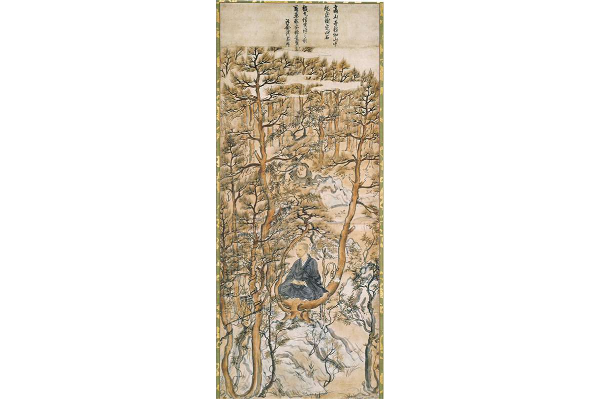
В Сэкисуй-ин хранится подлинник наставления Мёэ «Арубэкиёва». Его мысль о том, что каждому нужно жить так, «как подобает», повлияла даже на «Госэйбай сикимоку», первый свод законов самурайского правительства.
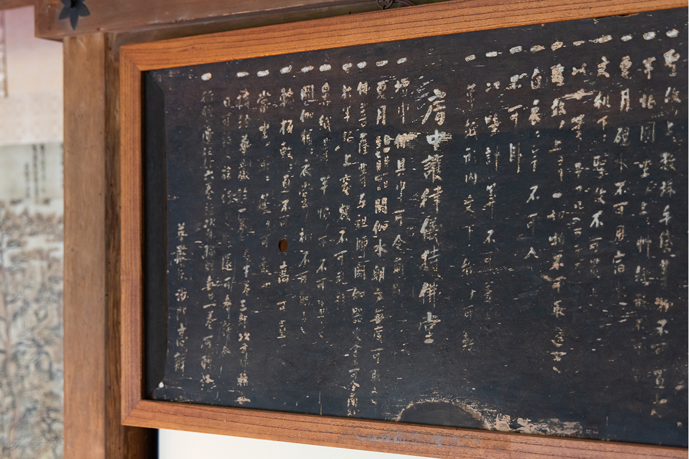
Свитки
«Тёдзю-гига»: самая знаменитая японская манга
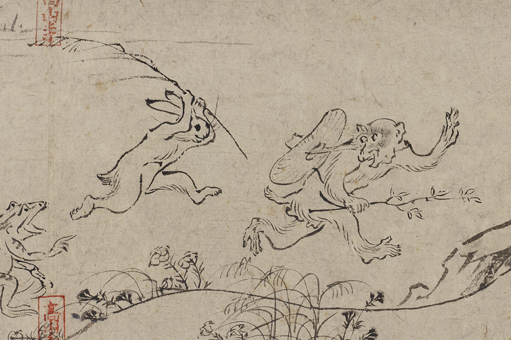
«Тёдзю-гига», наверное, самый известный японский свиток с картинами. Полное название «Тёдзю дзимбуцу гига», «Шуточные рисунки зверей и людей». Это национальное сокровище из четырёх свитков, которые по порядку называют Ко, Оцу, Хэй и Тэй. В них нет ни текста, ни сюжета: всё нарисовано одними линиями туши, без цвета.
За ловкое упрощение героев и живое движение свитки хвалили Осаму Тэдзука, отец японской манги, и режиссёр-аниматор Исао Такахата, называя их родоначальником манги и анимации. Присмотритесь к приёмам, которые узнает любой современный читатель: линии, похожие на облачка с репликами; полосы тумана «суяри-гасуми», которыми меняют сцену; несколько моментов времени на одном рисунке.
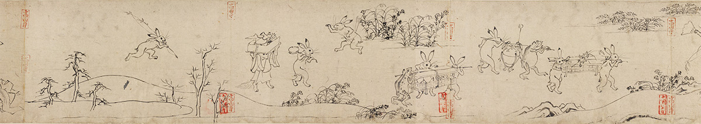
Когда свитки попали в Кодзан-дзи и как это случилось, неизвестно. По одной версии, во второй половине эпохи Муромати они уже были здесь. Время создания тоже определено приблизительно: Ко и Оцу нарисованы в одно время в эпоху Хэйан, Хэй на рубеже эпох Хэйан и Камакура, Тэй в эпоху Камакура. По манере и времени ясно, что авторов было несколько. Сейчас спорят две версии: что это были художники при храмах, писавшие буддийские образы, или придворные живописцы.
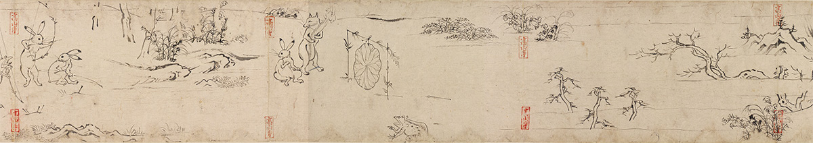
Каждый свиток склеен из многих листов, и за века хранения листы менялись местами, а некоторые распались на обрывки. Поэтому сегодня свитки выглядят не так, как в начале. Многое помогли понять копии, сделанные до этих перемен: например, известно, что перед первым листом свитка Ко были ещё листы, которые потерялись.
Большая реставрация 2009–2014 годов показала, что первая и вторая половина свитка Ко сделаны из разной бумаги, то есть когда-то это были два свитка. Бумага свитка Оцу та же, что во второй половине Ко, и манера похожа, так что, возможно, их рисовал один человек. Свиток Хэй изначально был одним листом, расписанным с двух сторон: его расслоили на лицевую и оборотную половины и склеили в один длинный свиток. Значит, у двух сторон могли быть разные авторы и разное время. Каждое такое открытие рождает новые споры, и поэтому от «Тёдзю-гига» трудно оторваться.
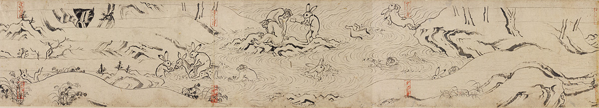
Звери и любимые сцены
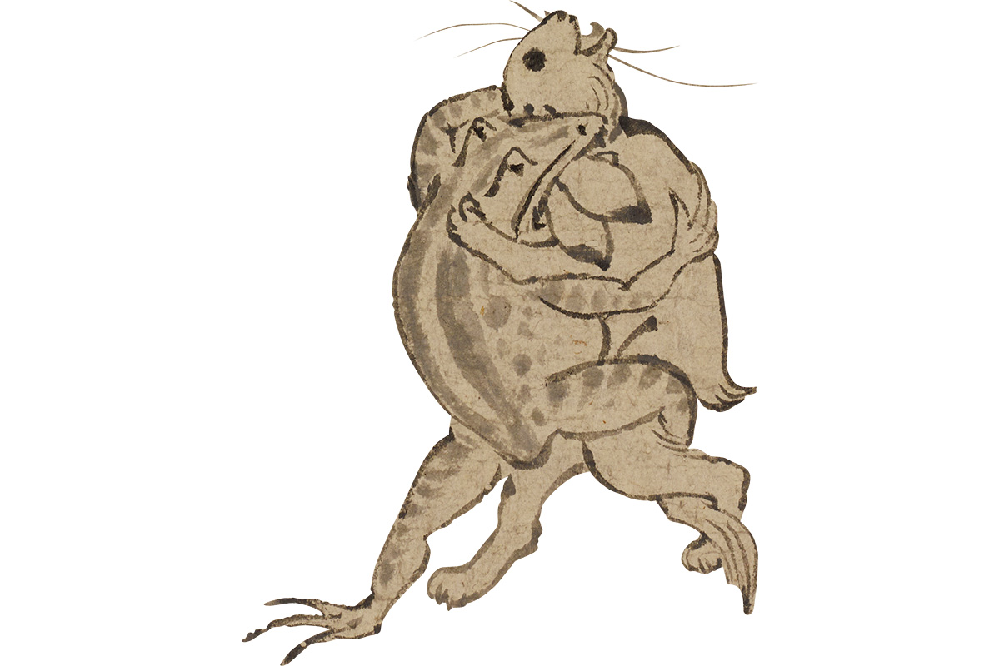
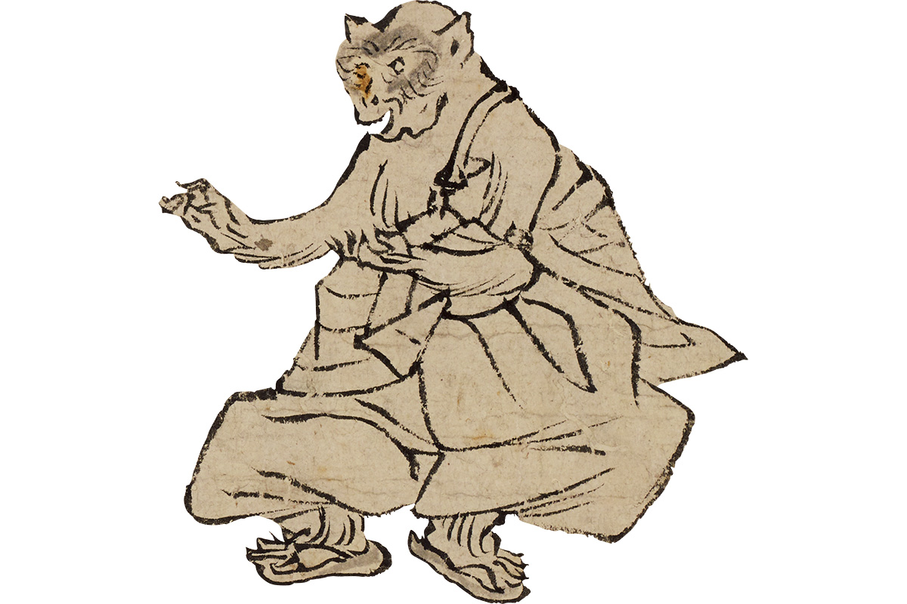
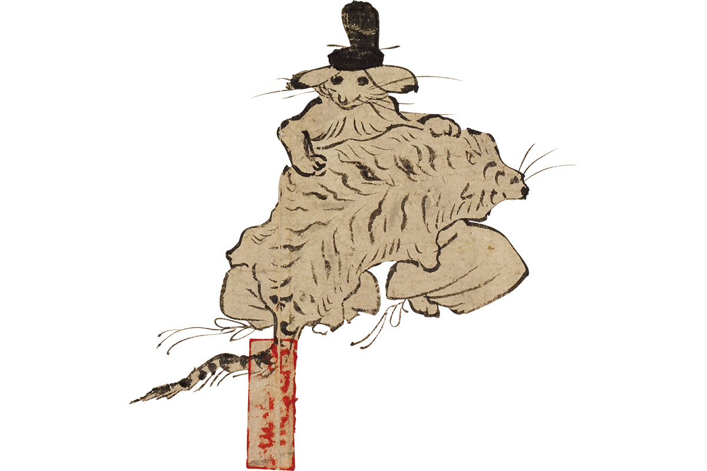
Свиток Ко: звери как люди
Самый известный из четырёх. Здесь появляются 11 видов животных, живших в Японии в эпоху Хэйан. Большинство ведёт себя совсем как люди, но кабаны и олени остаются обычными зверями. По мискантусу и опавшим листьям видно, что действие происходит осенью.
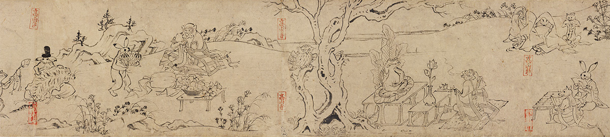
Свиток Оцу: звериный атлас
В этом свитке только животные, 16 видов, и ни одно не ведёт себя как человек. В первой половине нарисованы звери Японии, во второй диковины с материка и вымышленные священные существа, и все очень правдоподобно. Фон есть, сюжета нет, свиток похож на атлас животных.
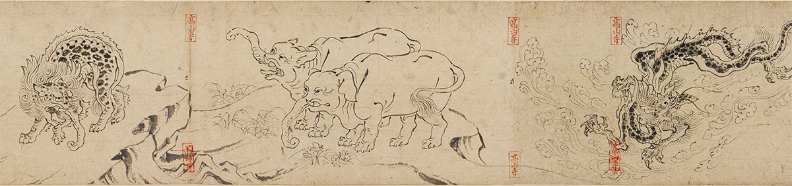
Свиток Хэй: люди и звери
В первой половине люди забавляются разными играми, во второй, как в свитке Ко, звери ведут себя как люди. Почему тема меняется посередине, долго было загадкой. Ответ дала реставрация: это две стороны одного листа. Есть мнение, что изначально это были просто наброски.
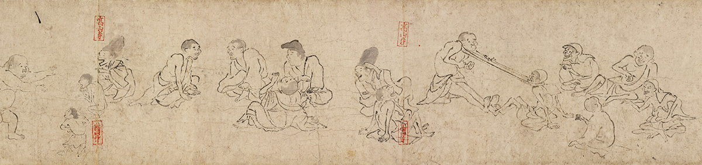
Свиток Тэй: единственный про людей
Не похож на остальные: линии толстые и быстрые, тушь бледная. Местами художник рисует в манере «нисэ-э», портретов с натуры. Главное удовольствие здесь пародия: игры и обряды, которые в свитке Ко устраивали звери, теперь повторяют люди.
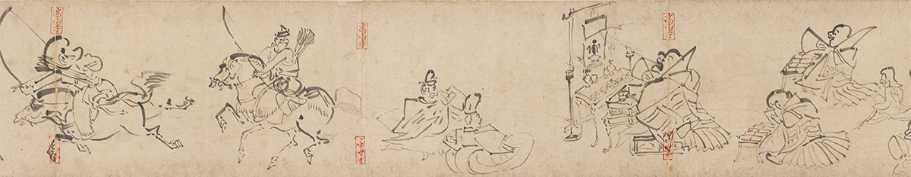
Чай
Здесь вырос первый японский чай
Кодзан-дзи известен не только свитками, но и старейшей в Японии чайной плантацией. История чая здесь начинается с монаха Эйсая (1141–1215), основателя храма Кэннин-дзи и школы риндзай в Японии: семена чая он привёз из Китая эпохи Сун и подарил Мёэ. Этот чай считают первым выращенным в Японии. В средние века чай Кодзан-дзи называли «хонтя», «настоящим чаем», и каждый год подносили императору.
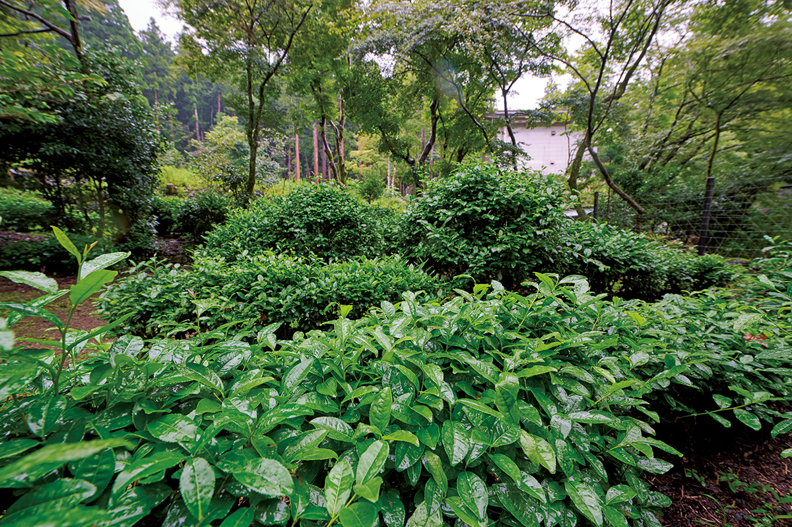
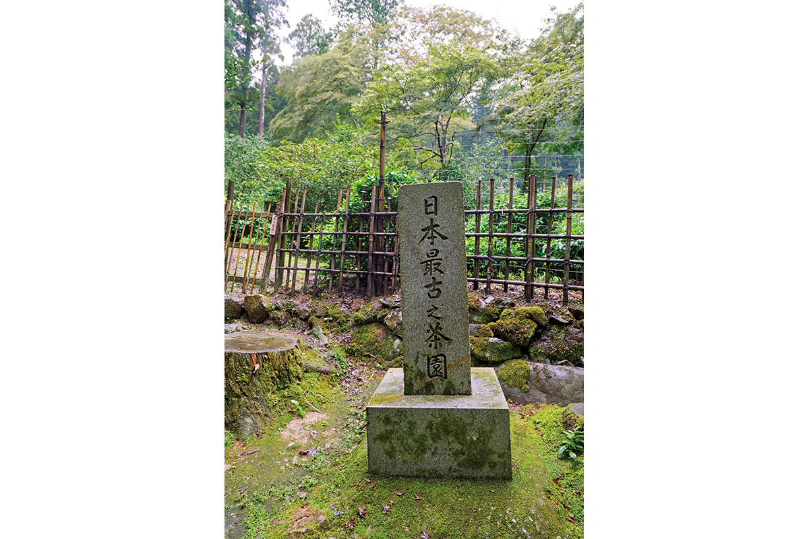
Чай прогоняет сон, который мешает монашеской практике, поэтому Мёэ сам очень его ценил, советовал монахам и старался распространить. Чай славился качеством, его просили многие храмы, и кусты пересадили в Удзи. Так, по преданию, и начался чай Удзи. Сегодня плантацией храма в основном занимается чайная компания «Марутоси Ёсида мэйтяэн», которая хранит традицию «настоящего чая», и каждый май здесь собирают листья. Мёэ почитал божество Касуга, поэтому этот чай подносят и на обрядах в святилище Касуга-тайся.
Знакомство Мёэ и Эйсая началось с того, что Мёэ, придававший большое значение сидячей медитации, пришёл к Эйсаю учиться дзэн. Так что старейший чайный сад в Кодзан-дзи тоже след неутомимых поисков Мёэ.
Чайная Икоан
В 1931 году, к 700-летию смерти Мёэ, больше ста мастеров чайной церемонии собрали деньги и построили чайную Икоан, чтобы отблагодарить отца японского чая.
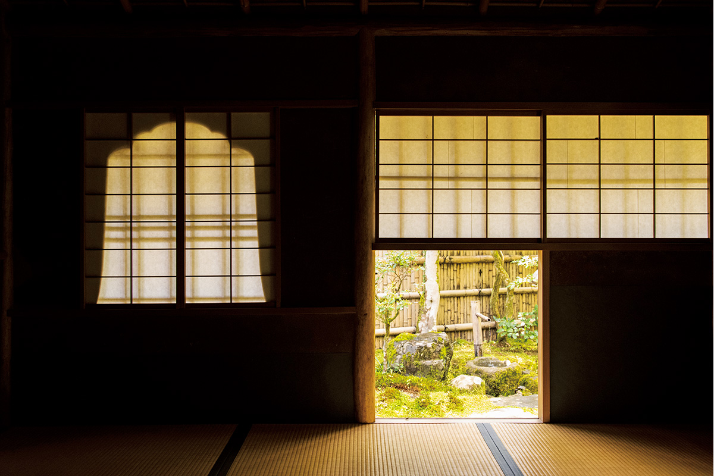
Чайную спроектировал знаток чайной церемонии, строил плотник третьего поколения известной мастерской, а сад вокруг разбил Дзихэй Огава VII (1860–1933), садовник, с которого во многом начинается японский сад нового времени.
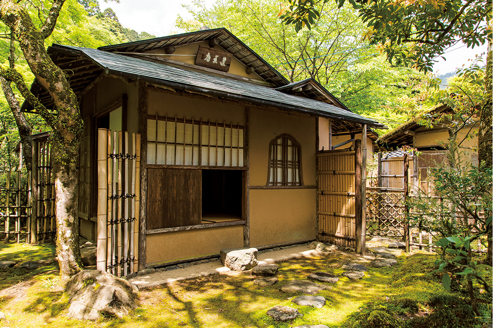
Мох в чайном саду Икоан мягкий и влажный, на эту зелень приятно смотреть. Только здесь растёт около ста видов мха.
«В икэбане тоже есть стиль сунамоно, в нём иногда используют мох. Вроде бы мох и мох, но у каждого вида своё лицо, и на них можно смотреть бесконечно»
Сэнсо Икэнобо
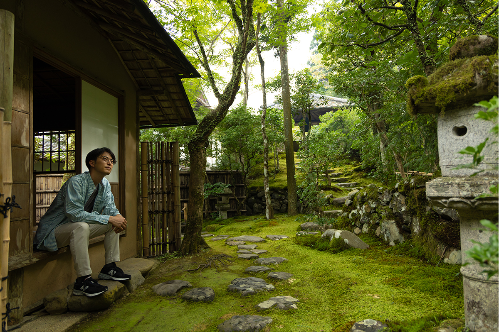
В 2021–2022 годах храм проводил особые экскурсии с управляющим: он водил гостей к Икоан и на плантацию, угощал маття на свежем горном воздухе, а на память участникам дарили особую храмовую печать госюин и сувениры с «Тёдзю-гига». По данным на 2023 год, чайная Икоан открыта только в отдельные дни и по предварительной записи, подробности на сайте храма.
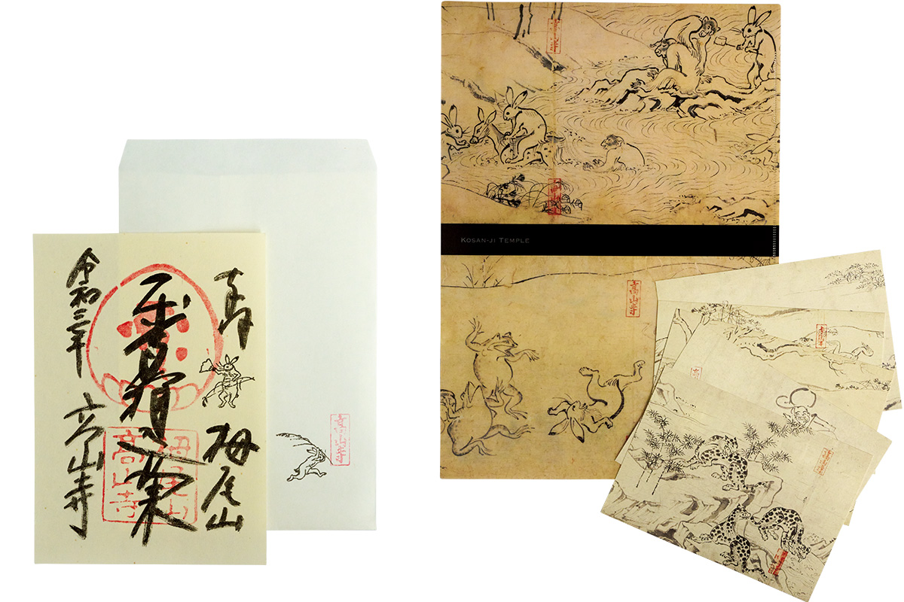
Сокровища
Щенок и олени Мёэ
Среди сокровищ храма есть и совсем милые вещи. Небольшую фигурку щенка Мёэ держал рядом с собой и, говорят, правда с ней играл. Есть и пара деревянных оленей, самца и самки.
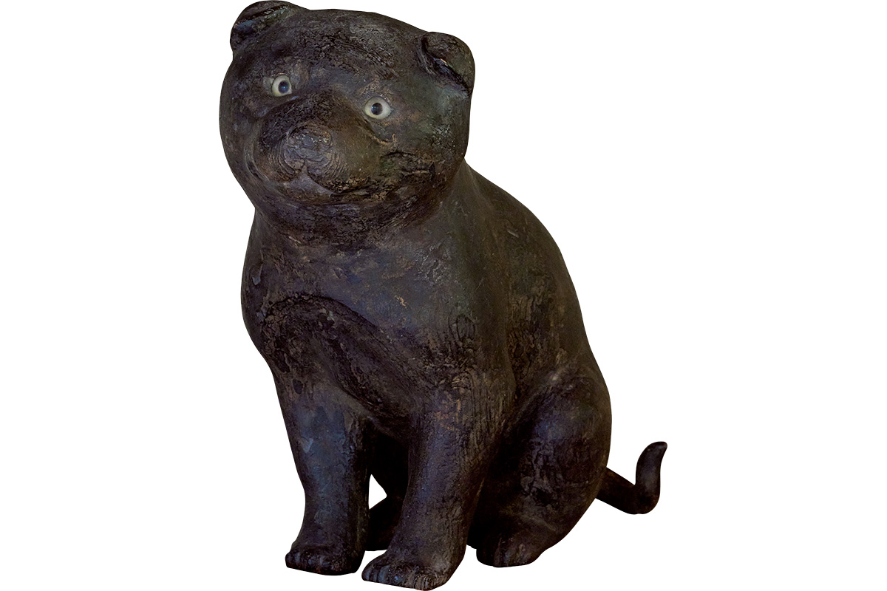
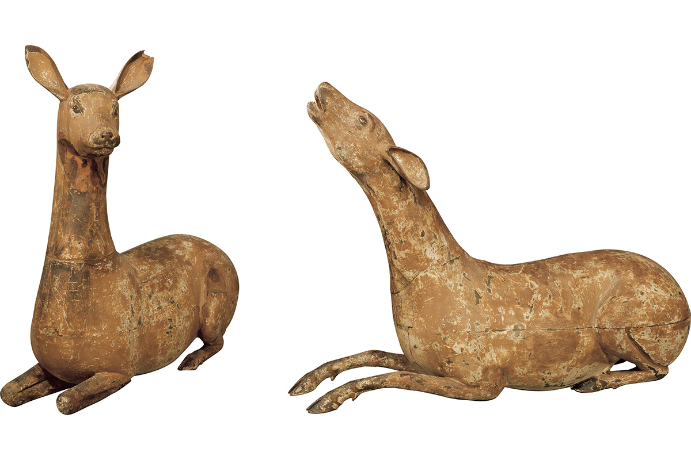
Какое время года выбрать? Сэнсо Икэнобо отвечает так:
«Осенние клёны красивы, но и молодая листва тоже, и мох, который в разгар лета сжимается, спасаясь от сухости. У каждого времени своя красота, так что „лучшего сезона“ здесь, наверное, и нет. Приезжайте, когда захочется: так вы подружитесь с садом и природой, и радость будет только глубже»
Сэнсо Икэнобо
В 2023 году вход в Сэкисуй-ин стоил 1000 иен, осенью отдельно берут ещё 500 иен за вход на территорию.
Храм Кодзан-дзи
- Адрес
- префектура Киото, Киото, район Укё, Умэгахата Тоганоо-тё, 8
- Телефон
- +81 75-861-4204
- Часы работы
- 8:30–17:00
- Цены / Вход
- Сэкисуй-ин 1000 иен, осенью отдельно 500 иен за вход на территорию. Чайная Икоан открыта только в отдельные дни, по записи
- Сайт
- kosanji.com
Ещё сады
Три сада, которые любит Сэнсо Икэнобо
Под конец мы спросили Сэнсо Икэнобо, что в Киото стоит беречь.
«Тысячелетняя история Киото держится на умении и опыте людей. Если этот ресурс не просто потреблять, а поддерживать жизнь тех, кто здесь живёт, и пускать его по кругу, то и ремёсла с культурой будут оценены заново. Тогда и через сто, и через двести лет город останется привлекательным»
Сэнсо Икэнобо
Кроме Кодзан-дзи он назвал ещё три сада.
Храм Дзякко-ин в Охаре это женский монастырь. По преданию, его основал принц Сётоку-тайси (574–622), чтобы молиться о покое души своего отца, императора Ёмэя. Сад здесь связан с «Повестью о доме Тайра».
«Рядом с большим старым пнём тянется молодой побег, обильно бьют родники. Чувствуется, что это место за долгие годы срослось с землёй»
Сэнсо Икэнобо
Храм Дзякко-ин
- Адрес
- префектура Киото, Киото, район Сакё, Охара Кусёдо-тё, 676
- Телефон
- +81 75-744-3341
Храм Сайхо-дзи школы риндзай почти целиком покрыт мхом, около 120 видов, поэтому его зовут Кокэ-дэра, «храм мха».
«Говорят, после войн он то приходил в упадок, то возрождался, зелень сама разрасталась, и так появился нынешний облик. По-моему, в этом храме воплощён буддийский дух принятия»
Сэнсо Икэнобо
Храм Сайхо-дзи
- Адрес
- префектура Киото, Киото, район Нисикё, Мацуо Дзингатани-тё, 56
- Как добраться
- посещение только по предварительной записи, онлайн или открыткой с оплаченным ответом
Храм Дайхикаку Сэнко-дзи в Арасияме перенёс сюда и восстановил Рёи Суминокура (1554–1614), купец, который расчищал русла рек: храм должен был молиться о тех, кто трудился на этих работах. Из гостевого зала на скале над рекой открывается весь Киото.
«Пожалуй, это не сад в привычном смысле, но подъём по тропе, похожей на зелёную галерею, и вид сверху прекрасны»
Сэнсо Икэнобо
Храм Дайхикаку Сэнко-дзи
- Адрес
- префектура Киото, Киото, район Нисикё, Арасияма Накао-симо-тё, 62
- Телефон
- +81 75-861-2913
Фото: Саюри Оно, Садахо Наито.